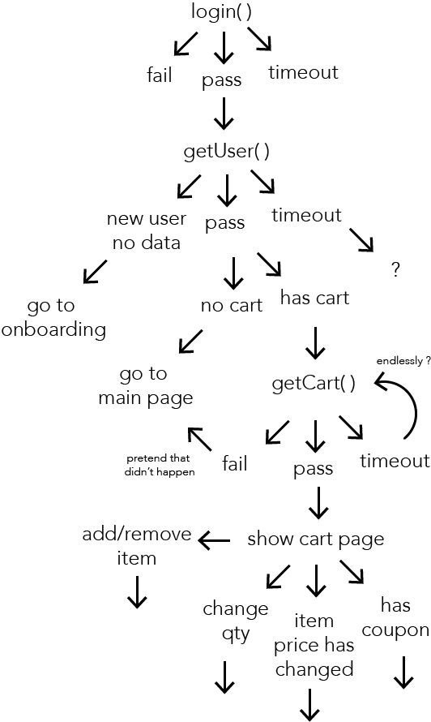
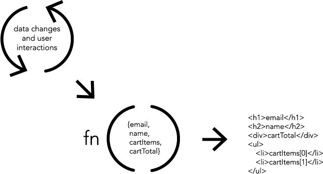

class: center, middle # Pure Views ## Build it quicker. </br>Build it more performant. </br>Build it more resilent. Bobby Schultz [@puppybits](https://twitter.com/puppybits) <div style="position:absolute; width: 100%; text-align:center; bottom: 20px; font-size: 0.7rem; margin: 0 -80px"> <a href="http://bit.ly/pure-view-powers">View these slides at: bit.ly/pure-view-powers</a> </div> --- class: center, middle ## How our programs work  --- class: center, middle ## How our programs actually work  --- ### Applications have implicit complexities. 1. Permutations compound the impact of a single side effect or mistake. --- ### Applications have implicit complexities. 1. Permutations compound the impact of a single side effect or mistake. 1. Every potential branch, is another opportunity for a bug. --- ### Applications have implicit complexities. 1. Permutations compound the impact of a single side effect or mistake. 1. Every potential branch, is another opportunity for a bug. 1. The ease and frequency of side effects make it challenging to guarantee the same result everytime. --- ### Applications have implicit complexities. 1. Permutations compound the impact of a single side effect or mistake. 1. Every potential branch, is another opportunity for a bug. 1. The ease and frequency of side effects make it challenging to guarantee the same result everytime. 1. Mutability exposes the capability for side effects. --- ### Applications have implicit complexities. 1. Permutations compound the impact of a single side effect or mistake. 1. Every potential branch, is another opportunity for a bug. 1. The ease and frequency of side effects make it challenging to guarantee the same result everytime. 1. Mutability exposes the capability for side effects. 1. Side effects are the single worst factor for making code hard to understand. --- ### Applications have implicit complexities. 1. Permutations compound the impact of a single side effect or mistake. 1. Every potential branch, is another opportunity for a bug. 1. The ease and frequency of side effects make it challenging to guarantee the same result everytime. 1. Mutability exposes the capability for side effects. 1. Side effects are the single worst factor for making code hard to understand. 1. Passing references doesn't immunize applications to complexity and side effects. --- class: center, middle ## Simplifying with Functional Programming --- ## Simplifying with Functional Programming <h3 style="margin-bottom:0">Mutation</h3> An object that is liable to change. <h3 style="margin-bottom:0">Immutable</h3> An object that can NOT change. <h3 style="margin-bottom:0">Side Effect</h3> When a procedure changes a variable from outside its scope. <h3 style="margin-bottom:0">Pure Function</h3> A function that does not mutate anything outside of it's own scope. --- ## Simplifying with Functional Programming ### What is Pure? ```javascript var x = [1,2,3]; (function(){ x = [2,3,4]; }()) ``` ```javascript var x = [1,2,3]; for (var i=0; i < x.length; i++){ x[i] = x[i] + 1; } ``` ```javascript var x = [1,2,3]; x.reduce(function(arr, i, idx){ arr[idx] = i + 1; return arr; }, x); ``` ```javascript var x = [1,2,3]; x.map(function(i){ return i+1; }); ``` --- ## Simplifying with Functional Programming ### What is Pure? ```javascript var x = [1,2,3]; (function(){ x = [2,3,4]; // sets a new value for a variable outside it's scope }()) ``` ```javascript var x = [1,2,3]; for (var i=0; i < x.length; i++){ x[i] = x[i] + 1; // mutates the array directly } ``` ```javascript var x = [1,2,3]; x.reduce(function(arr, i, idx){ arr[idx] = i + 1; return arr; }, x); // passes in a reference to a mutable array ``` ```javascript var x = [1,2,3]; x.map(function(i){ return i+1; }); // The only side-effect free, pure function ``` --- ## Pure Views – ƒ(d)=V  --- ## Pure View Code  --- ## Pure View Benefits 1. no side effects 1. with no ability to mutate, the only effect is creating a new object 1. isolating the scope makes it easy to see all possible branches 1. seperate the concerns of data and the concerns of users. 1. each unique static data object is a unique view 1. huge reduction in the brittleness of UIs 1. isolating factors mades it easy. Easy makes it composable. Composable makes it powerful. --- class: middle, center ## What can we do when it's easy and composable? --- class: middle, center # The Super Powers of Pure Views A stack built on Pure Views, Immutable Data & Stateless Data Transforms. --- ## Hyper Reflexes - FPS Responsiveness * global optimizations on render cycle * higher FPS in most use cases * minimize and batch DOM interactions ([http://bit.ly/stack-perf](http://bit.ly/stack-perf)) * highly optimized especially compared to string template systems (like handelbars and backbone) --- ## Hyper Speed - Server-side Prebooting * to get to any state in the app only a static JSON is needed * server-side prebooting for extreme page load speed WITH offline support --- ## Quantum Entanglement - Real-Time Editing * true real-time editing of code. not browser reloading. * update layout, styles, view structure, event handlers *without* modifing application state <video src="imgs/superpowers-hmr.mp4" onLoadeddata="javascript: this.currentTime = 1" onClick="javascript: this.play()" style="height:40%" /> --- ## Shape Shifting/Impersonation - Smoke Testing Layouts * sideload view stubs to test every layout and action * unique URL params to navigate to any state * dead code elimination removes view stubs on production builds <video src="imgs/superpowers-snapshot.mp4" onLoadeddata="javascript: this.currentTime = 1" onClick="javascript: this.play()" style="width:90%" /> --- ## Time Travel - Rewind/Fastforward for apps * because application state is only data, it doesn't need to log events to record state mutations * immutable data makes it trival to save each state change and play/rewind/fast-forward <img src="imgs/superpowers-time-travel.gif" style="width: 60%"/> --- ## Teleportation - Switch devices maintain state * immutable data makes logging every change to the data extermely iffecent * record every change in real-time, serialize to the server and revieve on another device * Switch from desktop to mobile web and maintain app state --- ## Telepathy - Record/Playback for Production Bugs * teleportation also gives us the option serialize the application state when an excpetion is thrown * don't think what the users saw or did, just replay it. * dev just needs to pull down the record of mutations and scrub around to find the cause --- ## Resiliency over Rigidity * Fully working app 1/4 the way through the build out * unit test up the data layer without making any assumptions of the view * UAT meeting fixed 7 of the 12 bugs within 30 seconds --- ## Downsides * some libraries don't play nice with pure functions, RxJS, D3 and jQuery. * only a few framework options for iOS & Android. --- class: center, middle ## Thank you [@puppybits](https://twitter.com/puppybits) <div style="width:100%; text-align:left; position: absolute; bottom: 60px; font-size: 1rem"> <div>Resources:</div> <a href="http://bit.ly/megatome">Megatome - Starter kit for React and Webpack</a></br> <a href="https://facebook.github.io/react">ReactJS</a></br> <a href="https://facebook.github.io/react-native/">Pure Views on iOS & Android - React Native</a></br> <a href="https://medium.com/@puppybits/letting-people-in-the-door-how-and-why-to-get-page-loads-under-2-seconds-340c487bd81d#.ijz0x6vv1">Blog - How to get page loads under 2s</a></br> <a href="http://bit.ly/pure-views">Blog - Details on Pure Views</a></br> </div> <div style="position:absolute; width: 100%; text-align:center; bottom: 20px; font-size: 0.7rem; margin: 0 -80px"> <a href="http://bit.ly/pure-view-powers">View these slides at: bit.ly/pure-view-powers</a> </div>